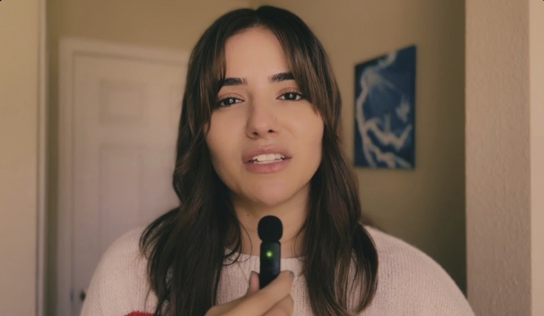

Featured Video
Introduction: Not Everyone Should Call Themselves Teachers
My hope for this generation is to walk in wisdom.
Watch on YouTubeRevival • Testimonies • Nations
"And this gospel of the Kingdom will be preached in the whole world as a testimony to all nations." Matthew 24:14
The Journey

About Me
Serena is a full-time missionary who has traveled the world preaching the gospel and equipping the Body of Christ. With a heart to see lives transformed by the love of Jesus, she has ministered across nations, carrying the message of hope, freedom, and the power of God’s Word. Everywhere she goes, Serena is dedicated to raising up bold believers who walk in faith and intimacy with the Lord
Alongside traveling ministry, Serena uses social media as a platform to teach and disciple people in their walk with Christ. With a passion for creating with the Lord, she produces content that inspires others to encounter God personally and step into their Kingdom identity. Whether online or in person, Serena lives to glorify Jesus and encourage others to pursue the fullness of their calling.
Partner with the journeyInteractive Nations Map
Each nation the glorious Gospel was preached, the body of Christ equipped and the Kingdom of Heaven established.
My Youtube
Using my social media as a tool to reach this generation. Taking the art of creating to teach sound doctrine.

Featured Video
My hope for this generation is to walk in wisdom.
Watch on YouTubeSow Into the Ministry
For ZELLE: Serena.n.m.terrana@gmail.com
Stay Connected